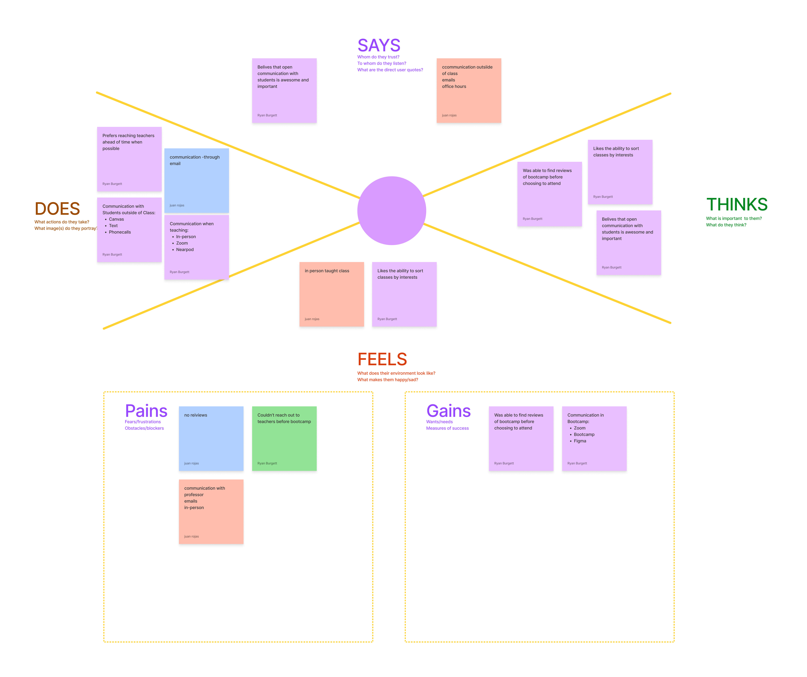
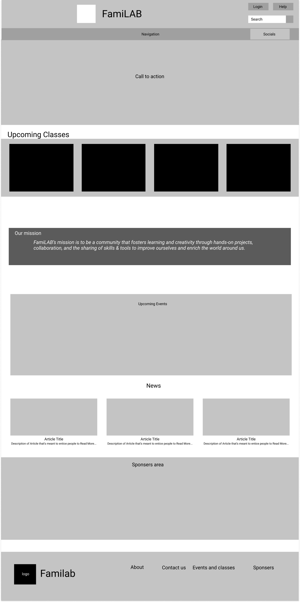

a redesign of the familab tech/engineering online school nonprofit.
Case Study
A True Gamers Source of Video Game Information
Activities
User Interviews/Research/User persona
Proto/Personas
Affinity Diagram/Empathy Map
User Insight/Statement/Ideation/Feature Prioritization Matrix
Value Proposition/StoryBoard/Journey Map
Competitor Analysis/User Flow/sketches
Wireframes
Brief
Familab website redesign
Project
Non Profit Redesign
Role
User Research/WireFrame Designer
Time
5 Week Project
Tools Used:
Figma
Slack
Trello
invision
Adobe Color
Invision
Microsoft Word
Google Drive/Docs
Zoom
Familab
Proto-Persona
Usability Test
Testing Results And Notes
The results from our test gave out both positive and negative outcomes that helped us grow and fix the final iteration of redesigning our homepage's mobile and webpage; users of the mid-fidelity found the site too crowded and compartmentalized. The mission statement also could have provided more value to the users. We spread out the elements, destroyed some background boxes so they could flow together, and expanded on the mission statement box by adding some ideas, which we developed using additional features from the about page. In the final version, we created further uniformity by taking the upcoming classes from Public Classes & Events and implementing it on the home page.
We used an affinity diagram to organize many ideas about Familab, what they stand for, and their natural relationships. The organized output from a brainstorming session led us to several theories on redesigning familab. Using the affinity diagram to generate, organize, and consolidate information related to Familab. After we developed ideas, we grouped them according to their affinity or similarity.
Feature Prioritization Matrix
We ranked and organized features for familab and changed the website's design based on customer value, business goals, time and cost, and technical viability.
Empathy Map
We constructed an empathy map to understand users of familabs behavior and visually communicated those findings amongst everyone in the group, uniting the team under one shared deeper understanding of the users of familab.

User Persona
Leonardo Patterson is our user persona used to create reasoning and empathy with the users of familalb to Gain a perspective similar to said users of familab to gain a deeper understanding so that the redesign is as faithful as possible to the original but a meaningful change.
User Insight
Our User Insight we used when designing the website was “A student in an engineering college needs to sharpen and apply his skills outside of his workplace because they want to build up their chances for a career in the future.”
Problem Statement
Our problem statement we used when challenging our website's issues was, "Familab was designed to help other users learn about new and interesting things. However, we have observed that our product or service isn't meeting the ability to connect and help users, causing FamiLAB to be outdated and harming our business. How might we improve FamiLab so that our customers are successful based on how many classes are taught and how many students per class are showing up?"
User Scenerio
Our scenario was that our persona, Leonardo Patterson, was looking for classes to teach and gain more experience, and the phases Leonardo went through to reach out to famillab
StoryBoard
Our scenario was that our persona, Leonardo Patterson, was looking for classes to teach and gain more experience, and the phases Leonardo went through to reach out to famillab.
Mind Map
We decided to follow the flow of the (Home page- about FamiLAB), along with the other flow of (Home page- Public Classes & Events). Our original version of FamiLAB didn't have this page, so we thought it would be an exciting challenge to design it from scratch.
Card Sorting
Competitor Analysis
We made a competitor analysis to understand the competition in the teaching field and used the competition to identify opportunities for familab and find an edge.
Heuristic Evaluation
We used a heuristic Evaluation to scan and rate the problems or features of the original site.
Syle Guide
Low Fidelity Prototyping

Mid Fidelity Prototyping
High Desktop Fidelity Prototyping
High Mobile Fidelity Prototyping
Final Thoughts/Conclusion
Other groups had done their NPO site redesigns to present a comprehensive set of opportunities for iteration should this project continue. A reorganization of the home page, another editing pass on the text style and writing, and the implementation of an interactive calendar would take precedence. Following that, we could make it, so the form implied by the button in Teach a Class is implemented inside the site, opening up the moment a large orange button is pressed. The box for Sponsors and Donors would also experience a redesign to make the labels much easier to find and read.
Our group is proud of what we've done to improve upon FamiLAB's old design, but we know we also have a long way to go. We succeeded in cleaning up some elements that were broken or no longer needed, but there's much more to accomplish. With the time we had to deal with sudden emergencies across the team, this could have been much worse.
The skills we picked will help with possible continuation and future projects. Our auto layout knowledge has expanded further. We know more about using negative space to our advantage. We've also discovered a few intricacies about Figma that lead to issues brought about by our need for more understanding.
That said, we must account for everything we learned in this process. Unfortunately, we were too harsh on the original site in our presentation, to the point of being called rude. I hope we never make that mistake again.
.png)


.png)